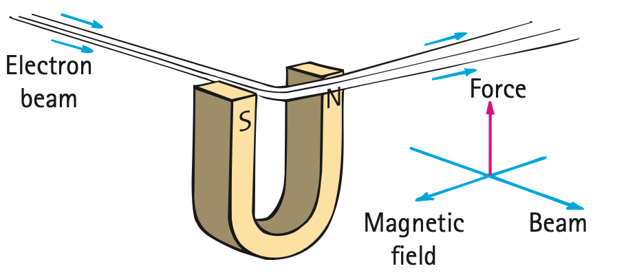
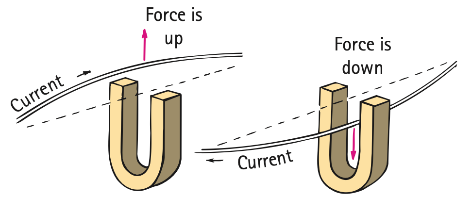
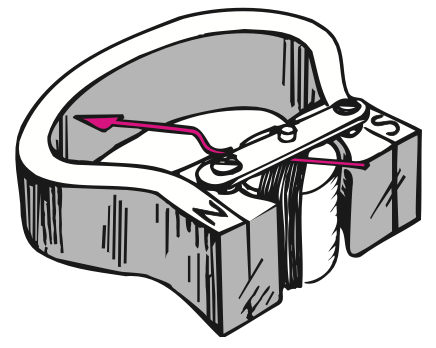

Electromagnets and Magnetic Forces
Mathematical idea: For perpendicular motion, magnetic force depends on charge or current, motion/length, and magnetic-field strength.
You will first design stronger electromagnets, then use diagrams and the unit’s allowed force relationships to connect moving charges to pushed wires and working devices.
Learning Target
Students will analyze electromagnets and magnetic forces on moving charges and current-carrying wires.
I can statements
- I can explain that a current-carrying coil of wire is an electromagnet.
- I can describe how increasing current or coil turns affects electromagnet strength.
- I can explain how an iron core can strengthen an electromagnet.
- I can explain that moving charges can experience magnetic forces.
- I can describe how magnetic forces act on current-carrying wires.
- I can connect electromagnets to motors, speakers, maglev systems, relays, and lifting magnets.
Vocabulary
These are words you will see in this section. Do not define them yet.
- electromagnet
- iron core
- saturation
- superconductor
- magnetic force
- magnetic field strength
- galvanometer
- electric motor
- armature
- maglev
Use the preview activity to decide which words you already know, recognize, or do not know yet. Watch for these words in bold when they are first introduced or defined in the reading.
Preview: Skim Before You Read
Directions
Before reading closely, skim the vocabulary list and the section. Look at titles, headings, bold words, pictures, captions, diagrams, tables, and formulas. Do not try to understand everything yet. Your job is to notice what already looks familiar and make predictions about what this section may explain.
Step 1 — Sort the vocabulary. Write each vocabulary word in the column that best matches what you know right now. You may move a word later.
| Know for sure | Recognize | Don’t know yet |
|---|---|---|
Step 2 — Skim the section. Record what catches your attention before you read closely.
| What I noticed | |
|---|---|
| What I predict | |
| What I wonder |
Content: Read, Look, Annotate, Apply
Directions
Read in short chunks. Annotate the prose and the figures together: underline evidence, circle or highlight bold vocabulary, label arrows or measured features, connect a sentence to an image, and write short questions or connections in the margins.
Reading 1: Building a stronger electromagnet
A current-carrying coil of wire is an electromagnet. Unlike a permanent magnet, its magnetic effect depends directly on electric current. That makes it controllable: turn the current on and a strong field can appear; turn the current off and the current-produced part of the field disappears.
The source gives two direct ways to make the coil field stronger: increase the current and increase the number of turns. Each turn contributes a magnetic field, so more closely arranged turns make a larger combined field in the central region.

Image read: Use panel (c) to mark the region where many turns reinforce one another. Compare it with the single-loop pattern.
Industrial electromagnets often place an iron core inside the coil. The coil’s field aligns many domains in the iron, and the aligned iron adds to the magnetic field. But the strengthening does not continue forever. Once nearly all available domains are aligned, the core approaches saturation; increasing current further no longer produces much additional magnetization of the core.
Very strong magnets can also use a superconductor, a material that can carry very large current with essentially no electrical resistance under suitable cold conditions. Superconducting electromagnets are used in particle accelerators and MRI systems, though energy is still required to keep the materials cold.
This distinction matters for engineering. An iron core is useful because domain alignment magnifies the field, but it also brings saturation limits. A superconducting coil avoids ordinary resistive heating and can support enormous current, but only as part of a cryogenic system. Different designs solve different problems rather than giving one universally “best” magnet.

Image read: Describe the visible evidence for a magnetic interaction without contact. Do not treat levitation as evidence of free energy; identify that maintaining superconducting conditions requires an energy-supported system.
Stop and Discuss
- Name three design changes that can strengthen an electromagnet and explain the physics of each.
- Why does an iron core eventually stop adding as much strength even if current continues to increase?
Teacher answer: Increase current, add turns, or add an iron core before saturation. The core strengthens the field through domain alignment.
Example 1: Rank electromagnet designs
Three coils use the same wire: A has 20 turns at 1 A, B has 40 turns at 1 A, and C has 40 turns at 2 A. Assume similar geometry and no saturation.
- Rank their expected magnetic strength from least to greatest.
- Explain which variables your ranking uses.
Teacher answer: C > B > A. More turns and more current increase the coil field when other conditions are similar.
You Try It 1: Add an iron core
Two identical coils carry the same current. One has an iron core and the other has an air core.
- Predict which is stronger under ordinary conditions.
- Explain the role of magnetic domains in your prediction.
Teacher answer: The iron-core coil is stronger because the coil field aligns domains in the iron and the core field adds to the coil field.
Reading 2: Magnetic force on moving charge
A stationary charged particle does not experience the same deflecting effect from a steady magnetic field as a moving particle does. When charge moves across a field, however, it can experience a magnetic force. The source emphasizes direction: the deflection is sideways, perpendicular to both the motion and the magnetic field.
The effect is strongest when the particle moves perpendicular to the field. It becomes zero for motion parallel to the field. In this course, the simple force formulas are used for the perpendicular case.

Image read: Mark the beam direction, field direction, and force arrow. Verify that the force shown is sideways rather than along the beam.
Magnetic field strength describes how strong a magnetic field is at a location. A stronger field produces a larger deflecting force on the same moving charge under the same perpendicular-motion conditions. The source’s cosmic-ray example extends the idea: Earth’s magnetic field bends many charged particles arriving from space.

Image read: Trace one incoming path and identify how the magnetic field changes the particle’s direction rather than simply pulling it straight toward Earth.
Stop and Discuss
- What two directions is the magnetic force perpendicular to in the electron-beam figure?
- How would increasing magnetic-field strength affect the force on the same perpendicular-moving charge?
Teacher answer: Force is perpendicular to velocity and field. A larger B gives a larger force for the same q and v.
For a charge moving perpendicular to a magnetic field:
$$F=qvB$$$F$ is magnetic force, $q$ is charge magnitude, $v$ is speed, and $B$ is magnetic field strength.
The allowed field-strength form is:
$$B=\frac{F}{qv}$$These simple forms apply to the perpendicular case used in this unit.
Example 2: Force on a moving charge
A charge of 2 C moves perpendicular to a 3 T magnetic field at 4 m/s.
- Use $F=qvB$ to determine the magnetic force magnitude.
- State what would happen to the force magnitude if the speed doubled while other quantities stayed constant.
Teacher answer: F=(2)(4)(3)=24 N. Doubling speed doubles force in this perpendicular model.
You Try It 2: Find field strength
A 3 C charge moving perpendicular to a field at 2 m/s experiences a 12 N magnetic force.
- Use $B=\frac{F}{qv}$ to determine the field strength.
- Explain why a charge moving parallel to the same field would not use this perpendicular-force value.
Teacher answer: B=12/(3×2)=2 T. Parallel motion has zero magnetic deflection in the source model, so the perpendicular formula does not apply to that orientation.
Reading 3: Magnetic force on a current-carrying wire
Electric current is moving charge, so a magnetic field can also push a current-carrying wire. The moving charges experience a sideways force and transfer that push to the material of the wire. This is the bridge from particle-scale motion to a device you can see move.

Image read: Compare the two current directions. Mark how the force reverses when current reverses while the magnetic field stays the same.
The force is greatest for a wire perpendicular to the magnetic field and is sideways relative to both current and field. Increasing current means more charge passes through the wire each second, increasing the magnetic interaction. Increasing the length of wire that lies in the field also increases the interaction.
This action-reaction connection also runs both ways: a current-carrying wire can deflect a magnet, and a magnet can deflect a current-carrying wire. The source explicitly connects this to Newton’s third law.
Direction is just as important as magnitude. Reversing current reverses the sideways force while leaving the field unchanged. Reversing the field does the same. If both current and field reverse together, the force returns to its original direction. These comparisons help students read device diagrams without memorizing a single pictured orientation.
Stop and Discuss
- What changes in the source figure when current direction reverses?
- Why does a current-carrying wire experience a magnetic force if individual moving charges in it experience force?
Teacher answer: Reversing current reverses the force direction. The moving charges are pushed and transfer that force to the wire.
For wire length perpendicular to the magnetic field:
$$F=BIL$$$F$ is magnetic force, $B$ is field strength, $I$ is current, and $L$ is the length of wire in the field.
The allowed field-strength form is:
$$B=\frac{F}{IL}$$These simple forms are for the perpendicular case used in this unit.
Example 3: Force on a wire
A 0.50 m wire segment carries 4 A perpendicular to a 0.30 T magnetic field.
- Use $F=BIL$ to determine the force magnitude.
- Predict the force magnitude if current doubles while $B$ and $L$ stay fixed.
Teacher answer: F=(0.30)(4)(0.50)=0.60 N. Doubling current doubles force.
You Try It 3: Find the field from a wire force
A 2 m wire carrying 3 A perpendicular to a field experiences a 12 N force.
- Use $B=\frac{F}{IL}$ to determine the magnetic field strength.
- State one change that would reverse the force direction without changing its magnitude.
Teacher answer: B=12/(3×2)=2 T. Reversing current or reversing the magnetic field reverses force direction.
Reading 4: From small deflections to useful machines
A sensitive coil-and-magnet instrument called a galvanometer uses magnetic force to turn a coil when current flows. More loops increase sensitivity because each current-carrying turn contributes to the magnetic interaction.


Image read: Compare the simple and common galvanometer designs. Identify the same recurring ingredients: current in a coil, magnetic field, and a mechanical response.
If the system is arranged so the coil keeps turning rather than stopping after a small deflection, it becomes an electric motor. The source’s simple motor uses a loop in a magnetic field and reverses current every half-turn so the magnetic forces keep producing rotation in the same overall direction.

Image read: Locate the rotating loop, magnetic poles, and electrical contacts. Explain why current must reverse at the right time to keep the rotation going.
In larger motors, many wire loops are wound on an iron cylinder called an armature. Electromagnets also appear in lifting magnets, relays, speakers, and transportation systems. A maglev system uses controlled magnetic forces to support and propel a vehicle, reducing contact friction while still requiring an energy supply.
The meter sequence in the source shows how the same physics can be tuned for different purposes. A galvanometer converts a small current into a small deflection; an ammeter or voltmeter is a calibrated version of that idea. A motor removes the small-angle limitation and times current reversal so the coil continues through full rotations.
Stop and Discuss
- What common ingredients do the galvanometer and motor use to turn electrical current into mechanical motion?
- Why does a maglev system reduce contact friction without becoming a source of free energy?
Teacher answer: Galvanometers and motors both use force on current-carrying coils in magnetic fields. Maglev reduces contact friction but requires energy for controlled currents/fields and propulsion.
Example 4: Motor or meter?
Device A uses a coil in a magnetic field and turns only a small amount against a spring. Device B reverses current each half-turn and rotates continuously.
- Identify which device is a galvanometer and which is a motor.
- Explain the physical similarity between them.
Teacher answer: A is the galvanometer; B is the motor. Both use magnetic force on a current-carrying coil; the motor is arranged for continuous rotation.
You Try It 4: Junkyard lifting magnet
A crane uses a large current-carrying coil with an iron core to lift steel. The operator then switches off the current.
- Explain why the magnet can be strong while current flows.
- Explain why turning off current lets the crane release the load.
Teacher answer: Current creates the strong coil field and aligns the iron core. Switching current off removes the controllable field so the load can be released.
Vocabulary: Define the Terms
You have now seen these words in the reading, images, and practice. Use this table to consolidate the physics meaning of each term.
| Vocabulary term | Definition |
|---|---|
| electromagnet | A magnet produced by electric current in a coil of wire. |
| iron core | Iron placed inside a coil so aligned domains add to the coil’s magnetic field. |
| saturation | A state in which nearly all available magnetic domains are aligned, so the core adds little further magnetization. |
| superconductor | A material that can carry current with essentially no electrical resistance under suitable conditions. |
| magnetic force | A force that can deflect moving charge or push a current-carrying wire in a magnetic field. |
| magnetic field strength | A measure of the strength of a magnetic field at a location, represented by $B$. |
| galvanometer | A sensitive current-detecting instrument that uses magnetic force to deflect a coil or needle. |
| electric motor | A device that converts electrical energy to mechanical motion using magnetic forces on current-carrying conductors. |
| armature | The rotating coil assembly, often wound on an iron core, in a motor or generator. |
| maglev | Magnetic levitation technology that uses magnetic forces to support or propel a vehicle. |
Summary
- An electromagnet is a current-carrying coil; more current and more turns generally strengthen its field.
- An iron core can strengthen an electromagnet by aligning domains, but the core can approach saturation.
- A perpendicular-moving charge can experience magnetic force modeled by $F=qvB$; field strength can be found from $B=\frac{F}{qv}$.
- A perpendicular current-carrying wire can experience magnetic force modeled by $F=BIL$; field strength can be found from $B=\frac{F}{IL}$.
- Magnetic force is sideways relative to the motion/current and magnetic field in these perpendicular models.
- Galvanometers, motors, lifting magnets, and maglev systems all use controllable magnetic effects.
Teacher summary cue: Listen for controllability of electromagnets, saturation, sideways magnetic force, and the progression charge → wire → motor/device.
Common Mistakes
| Mistake | Why it is tempting | Check instead |
|---|---|---|
| Using $F=qvB$ for a stationary charge | The formula contains charge and field, so motion can be overlooked. | The simple magnetic-force relationship requires moving charge; for this unit it is used for perpendicular motion. |
| Saying a stronger iron core increases forever | Iron clearly strengthens a coil. | Remember saturation: once domains are mostly aligned, core magnetization cannot keep rising at the same rate. |
| Drawing magnetic force along the field | Other familiar forces often act along a line connecting objects. | In the source cases, magnetic force is perpendicular to both motion/current and field. |
| Thinking an electromagnet stays fully magnetic with current off | It can contain iron and look like a magnet. | Separate current-produced field from any residual magnetization of the core. |
Name two changes that can strengthen a current-carrying coil electromagnet.
A wire is perpendicular to a magnetic field. If current doubles while $B$ and $L$ stay unchanged, what happens to the force magnitude? Explain using the relationship taught in this section.
What is one thing you learned in this section? Explain it in at least one complete sentence.
What is one thing from this section you still need to understand or practice more? Be specific.